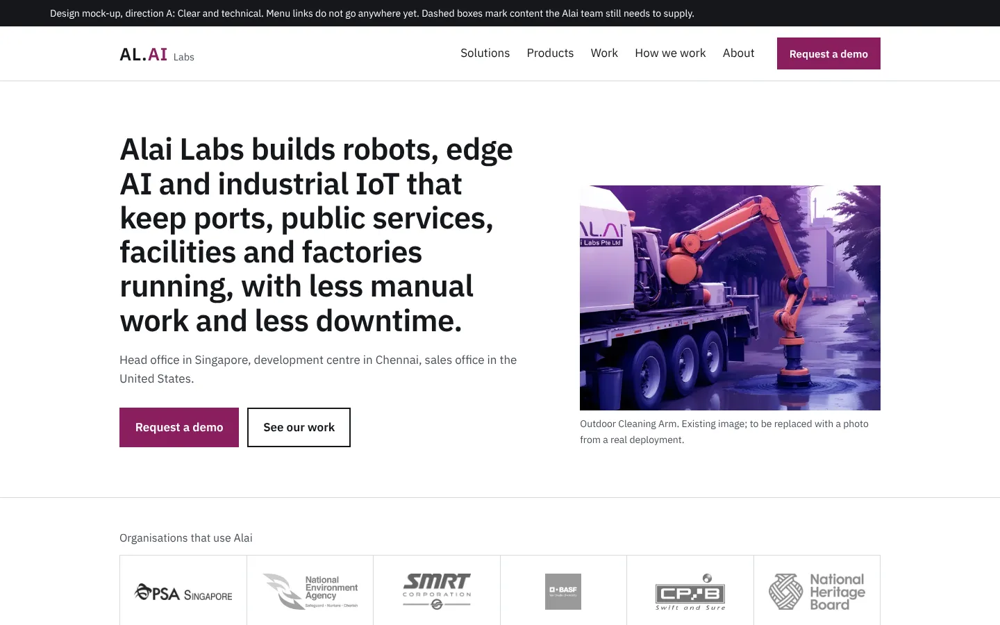
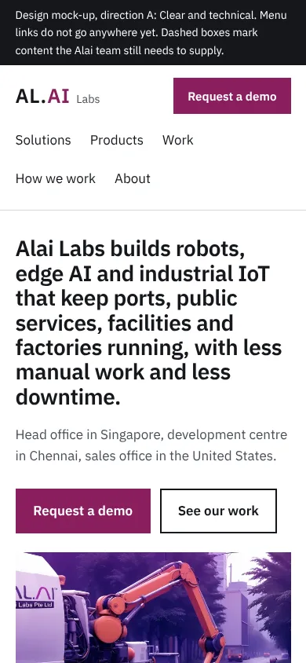
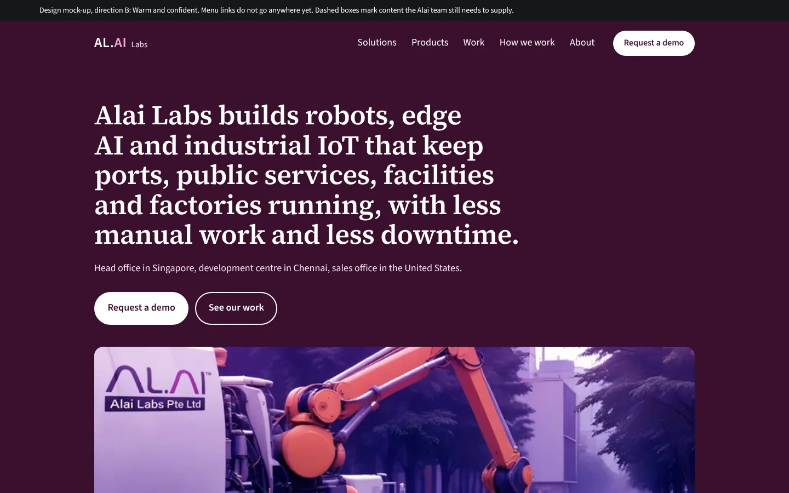
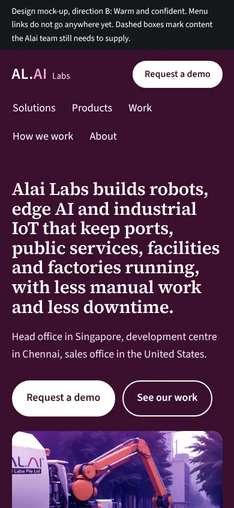

A. Clear and technical
Reads like a well-made equipment spec sheet: white page, fine rules, one brand colour kept for actions.
Open the A home page mock-up

Colour
- White page
- Ink #15171c
- Alai plum #8a1f5f
- Panel #f3f4f6
Type: IBM Plex Sans
Edge AI that keeps ports running
Engineered, even and very legible in spec tables and numbers.
Character
- Square corners, hairline rules, client logos in grey until hovered.
- Suits engineering and procurement evaluators; feels precise and sober.
- Risk: can feel cool and corporate if photos stay weak.
B. Warm and confident
Reads like a printed company profile: a deep plum cover, then airy pages on white and warm stone.
Open the B home page mock-up

Colour
- Cover plum #3a0f2e
- Alai plum #8a1f5f
- Stone #f4f1ed
- Ink #1d1a1c
Type: Source Serif 4 and Source Sans 3
Edge AI that keeps ports running
A serif for headings gives warmth; the sans keeps body text plain.
Character
- Rounded cards, full-colour client logos, industries as pill links.
- Suits operations leaders and public sector buyers; feels established and human.
- Risk: the big plum band leans on strong photos at the top of each page.